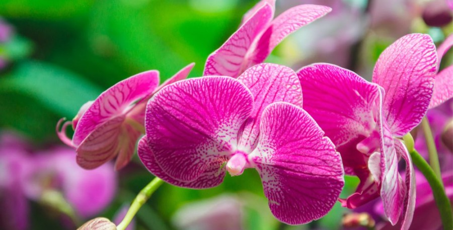
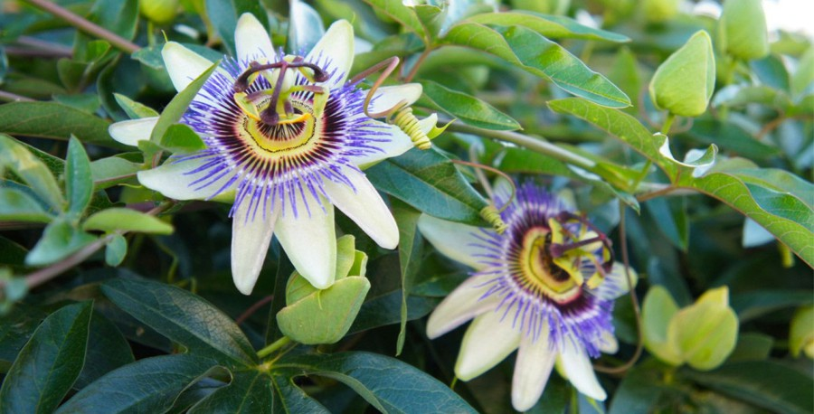
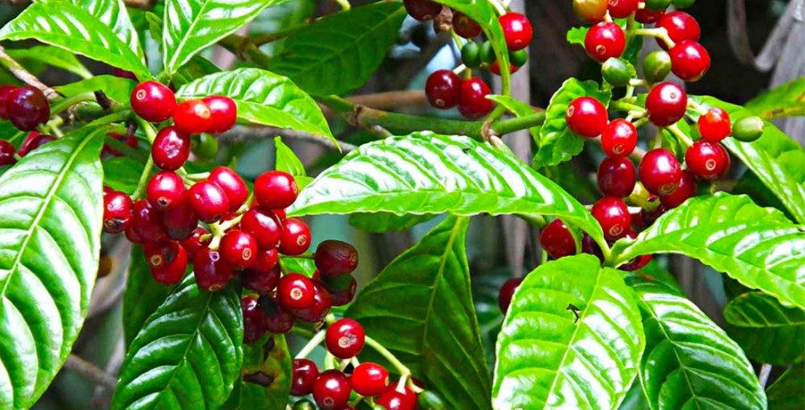
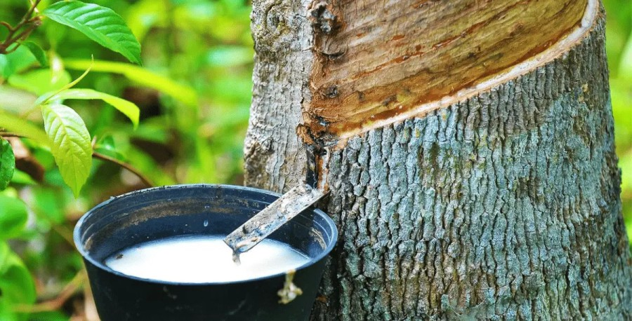
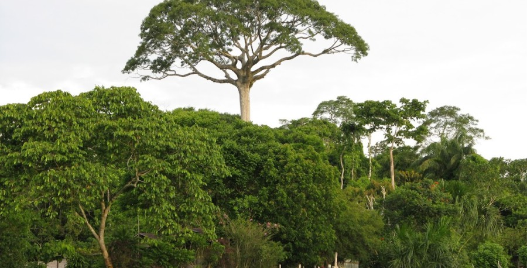
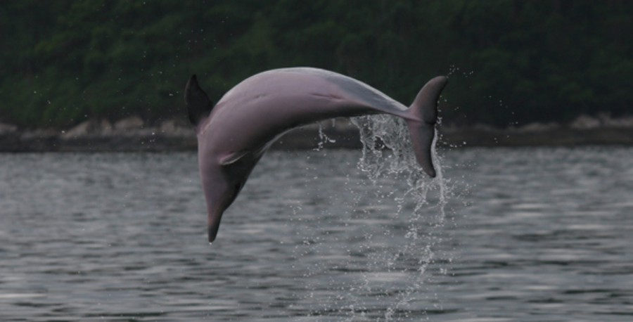
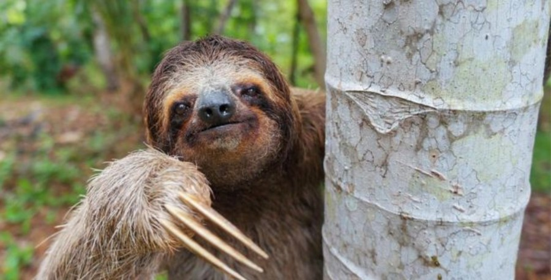
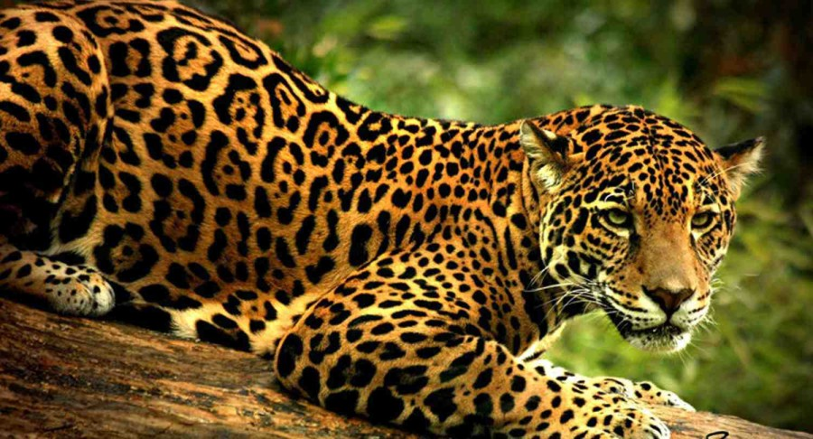
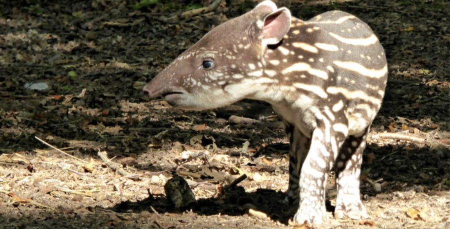
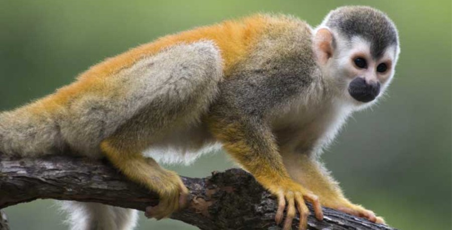

REGIÓN
AMAZONICA
DE COLOMBIA

La Región Amazónica ocupa toda el área centro-oriental de la América del Sur, al Este de la Cordillera de los Andes, y desde la Meseta de las Guyanas al Norte hasta la Meseta Brasileña al Sur. Su altitud varía de los 4.000 metros en la Cordillera Occidental hasta el nivel del mar. Tiene más de 7,8 millones de km2 y representa el 44% del territorio sudamericano, abarcando áreas de Bolivia, Brasil, Colombia, Ecuador, Guyana, Perú, Suriname y Venezuela. Se estima que la población total en la Amazonía es de 22 millones de habitantes (1992), la que incluye numerosas tribus indígenas.
Las áreas fronterizas de la Amazonía, a su vez, poseen una enorme diversidad y muchos de los potenciales y limitantes de la región amazónica como un todo. Los programas y proyectos ejecutados en estas áreas, al limitar el enfoque del estudio de una área extensa a otras menores, aún representativas del universo amazónico, facilitan una acción institucional e interdisciplinar para la realización de actividades de desarrollo. Entre los objetivos definidos por los países participantes para los estudios de cooperación fronteriza, está el de crear condiciones para el desarrollo sustentable. Al mismo tiempo posibilitar la preparación de proyectos específicos de desarrollo para esas áreas, que puedan servir de modelos para extender la planificación de desarrollo y la gestión ambiental a otras áreas amazónicas.
FLORA Y FAUNA DE LA REGIÓN AMAZONICA
FLORA:
 Las orquídeas, son plantas fáciles de encontrar en el Amazonas, son extremadamente exóticas y hermosas; sus diferentes variaciones son amadas por los viajeros, turistas y nacionales, pues se trata de plantas realmente elegantes. De hecho, la familia de las orquídeas es la segunda más grande del reino vegetal, motivo por el cual es posible encontrar en el Amazonas, una enorme variedad y especie de ellas; no obstante, también es posible encontrar diferentes de sus variaciones en otras de las 6 regiones de Colombia.
 Las flores de la pasión, han sido llamadas así por la pasión de Cristo, gracias a su forma similar a la de la corona de espinas; éstas flores pueden tener una amplia variedad de colores, los cuales van desde el blanco, hasta el rojo más brillante. Cuentan con unas 360 especies aceptadas y es fácil encontrarla en los lugares tropicales y subtropicales.
 El café colombiano, es uno de los más reconocidos en el mundo entero por su exquisito sabor y la calidad del mismo; seguramente has tomado una taza de café frío o caliente, proveniente de Colombia y ya conoces su delicioso sabor. El café crece en plantas cuyos frutos parece bayas, las cuales contienen dos granos de café cada una; su arbusto, puede demorarse hasta 8 años para desarrollarse en su totalidad y vivir más de un siglo.
 Por su parte, el árbol de la goma, es un árbol que llega a crecer hasta los 40 metros de altura, con una corteza blanquecina y es llamado así, pues lo utilizan para producir látex y otros tipos de cauchos. Para extraer la goma de éste árbol, es necesario perforar la corteza del mismo, hasta llegar a su tejido vegetal, lo que provocará que se produzca el líquido que luego de un proceso de refinamiento, se convierte en el producto totalmente aprovechable.
 La Lupuna, es otro árbol que puede llegar a crecer hasta 70 metros de altura y que hace parte de las leyendas y culturas precolombinas. Por lo mismo, es conocido como «árbol sagrado»; de igual manera, ha sido utilizado para fabricar diferentes medicinas, muebles y así mismo, como alimento, pues sus semillas producen un aceite especial para ello.
FAUNA:
 Los delfines de río, son autóctonos del río Amazonas y pueden encontrarse tanto delfines rosados como delfines negros, los cuales se encargan de darle vida y encanto a ésta parte del ecosistema amazónico.
 Los osos perezosos por otra parte, hacen parte de los mamíferos que se caracterizan por sus movimientos lentos y la gran cantidad de horas del día, que dedican a dormir, motivo por el cual reciben su nombre. Éstos osos se alimentan principalmente de hojas y es posible encontrar en la Amazonía, diferentes subespecies de osos perezosos de tierra y arbóreos.
 Los jaguares, hacen parte de la familia de las panteras, siendo el mayor felino de toda América y el tercero más grande del mundo entero. En culturas como la Maya y la Azteca, se puede evidenciar el lugar importante que le otorgaban a éste felino en su mitología, gracias a su fuerza, destreza y característica de superdepredador.
 Por su parte, el tapir es un animal curioso, caracterizado por una pequeña trompa en la que acaba su hocico. Es el único miembro vivo de la familia Tapiridae y se sabe que en tiempo antiguos, llegaron a haber hasta nueve especies más de éste exótico animal.
 Por último, tenemos a los monos ardilla, que llegan a ser de los más pequeños del mundo, pues llegan a medir de 25 a 35 centímetros de longitud. Éstos monos son omnívoros y pueden comer desde pequeños insectos, hasta frutas, radas y pequeños vertebrados que se pueden encontrar en la región.